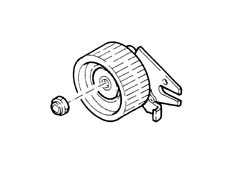

DESCRIPTION OF COMPONENTS
- Path
- Descriptions > 10 ENGINE > 1032 timing system > 1032C TIMING SYSTEM TENSIONERS > DESCRIPTION OF COMPONENTS
- Kind
- system description
- Applies to
- engines: 2.0 TB; all production periods
- Interactive page
- https://sloeber94.github.io/elrnDB-lThss/en/#/618525
Applies to: engines: 2.0 TB; all production periods
TIMING BELT TENSIONER
Specifications
Type
The timing belt is tensioned by an automatic tensioner that does not require servicing to adjust tension.
